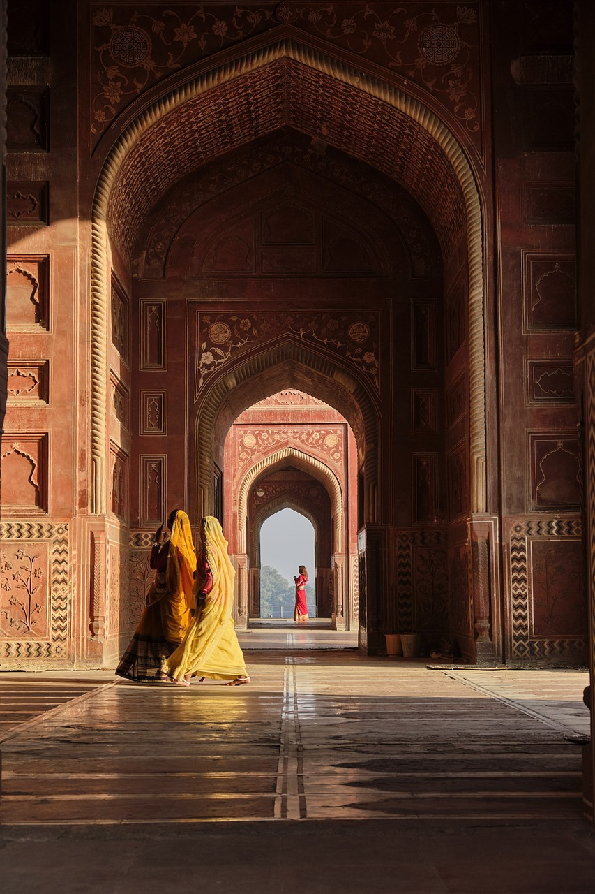
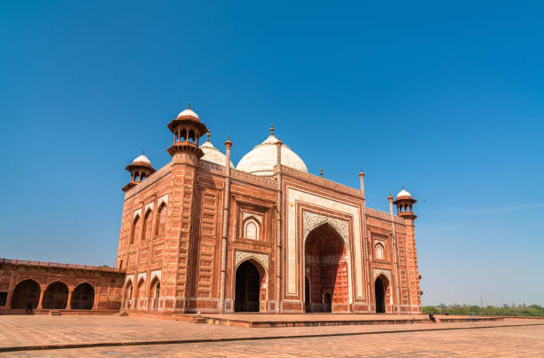
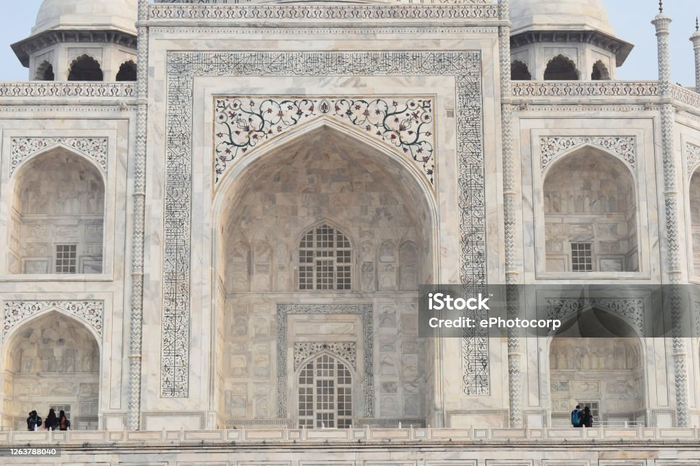
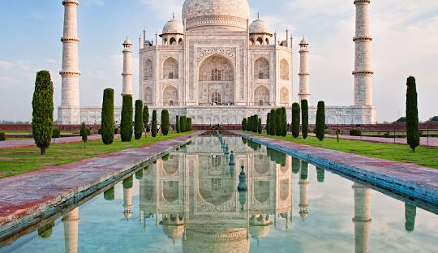

tourismTourism, the act of traveling for leisure, business, or other purposes, plays a significant role in modern society. Its benefits extend beyond mere pleasure and relaxation, affecting individuals, communities, and economies in numerous ways. This essay explores the multifaceted advantages of tourism for people, focusing on economic gains, cultural enrichment, personal growth, and social benefits. Firstly, tourism drives substantial economic growth. It generates income through expenditures on accommodation, food, transportation, and attractions. This influx of money supports local businesses, from small, family-run establishments to larger service providers. In many regions, tourism is a crucial economic driver, creating jobs and fostering entrepreneurship. For example, the hospitality sector relies heavily on tourist spending, leading to employment opportunities in hotels, restaurants, and tour operations. Additionally, tourism stimulates investment in infrastructure, such as roads and airports, which benefits both visitors and residents. Moreover, tourism fosters cultural exchange and understanding. When people travel, they encounter different ways of life, traditions, and customs. This exposure helps break down stereotypes and build bridges between diverse cultures. Tourists often engage in cultural activities, attend local festivals, and participate in traditional practices, which can lead to a greater appreciation of the host culture. Conversely, local communities can gain insights into global perspectives and trends through interactions with visitors. This mutual exchange enriches individuals' worldviews and promotes a more inclusive global society. On a personal level, tourism offers numerous opportunities for growth and self-improvement. Traveling challenges individuals to step out of their comfort zones, adapt to new environments, and solve problems in unfamiliar settings. These experiences foster resilience, adaptability, and creativity. Additionally, tourism provides a break from routine, allowing people to relax and recharge. Engaging in new experiences, such as exploring historical sites or participating in adventure sports, can enhance personal fulfillment and well-being. Socially, tourism promotes community development and cohesion. It can lead to the preservation and revitalization of cultural heritage sites, as local authorities and organizations recognize their value in attracting visitors. This preservation effort often involves community participation and pride, reinforcing social bonds. Furthermore, tourism can support social initiatives and charitable causes, as some travel experiences are designed to give back to the host communities. For instance, eco-tourism and volunteer tourism emphasize responsible travel practices and contribute to environmental conservation and social welfare. However, it's essential to acknowledge that tourism can also pose challenges, such as over-tourism, environmental degradation, and cultural commodification. To maximize the benefits of tourism while mitigating its drawbacks, sustainable practices and responsible tourism are crucial. This involves balancing economic gains with environmental protection and cultural respect. Encouraging tourists to engage in eco-friendly behaviors, supporting local economies, and respecting local traditions are ways to ensure that tourism remains a positive force. In conclusion, tourism offers significant benefits to people, encompassing economic, cultural, personal, and social dimensions. It drives economic growth, fosters cultural exchange, promotes personal development, and supports community cohesion. By embracing sustainable tourism practices, society can continue to enjoy these benefits while minimizing potential negative impacts. Ultimately, when managed thoughtfully, tourism can enhance the quality of life for individuals and communities worldwide.Read more...
  Agra Fort is a historic fortification located in the city of Agra in Uttar Pradesh, India. It is a UNESCO World Heritage Site and is renowned for its impressive architecture and historical significance. Here are some key details about the fort: 1. **History**: The fort was originally constructed by the Mughal Emperor Akbar in 1565. It was expanded and modified by subsequent Mughal emperors, including his grandson Shah Jahan, who added some of the fort's most notable features. 2. **Architecture**: The fort is a magnificent example of Mughal military architecture, with its red sandstone walls and intricate marble interiors. It covers an area of about 94 acres and includes various structures, such as the Jahangir Palace, Khas Mahal, Diwan-i-Khas (Hall of Private Audience), and the Diwan-i-Aam (Hall of Public Audience). 3. **Design**: The fort is enclosed by a massive wall and features four large gates: the Delhi Gate, the Lahore Gate, the Amar Singh Gate, and the Elephant Gate. Its defensive walls are about 20 meters high and include a series of towers and battlements. 4. **Interior**: Within the fort, you’ll find beautiful courtyards, palaces, and gardens. Notable structures include the Mussaman Burj, a tower with a stunning view of the Taj Mahal, and the Sheesh Mahal (Mirror Palace), which is adorned with intricate mirror work. 5. **Historical Significance**: Agra Fort was an important political and military center during the Mughal Empire. It was also the residence of several Mughal emperors and served as a strategic base for the empire. Shah Jahan was imprisoned in the fort by his son Aurangzeb, and it is believed that he spent his final years here, gazing at the Taj Mahal from a window in the fort. 6. **Cultural Impact**: The fort's design and construction reflect the grandeur of Mughal architecture and its influence on subsequent building styles in the region. It stands as a testament to the Mughal Empire's power and artistic achievements. Visiting Agra Fort offers a glimpse into the opulence and strategic importance of Mughal India, making it a must-see for anyone interested in history and architecture.
An immense mausoleum of white marble, built in Agra between 1631 and 1648 by order of the Mughal emperor Shah Jahan in memory of his favourite wife, the Taj Mahal is the jewel of Muslim art in India and one of the universally admired masterpieces of the world's heritage.
Taj Mahal of MUMTAZ BEGUM